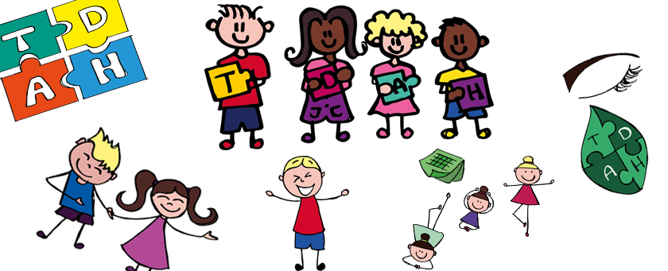
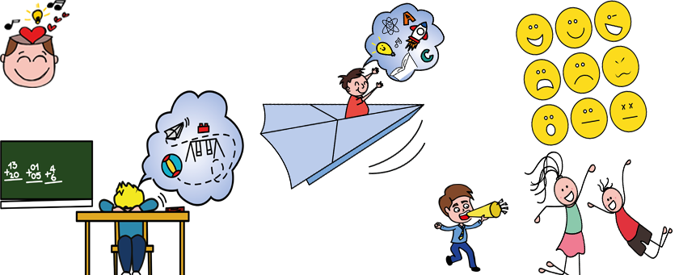
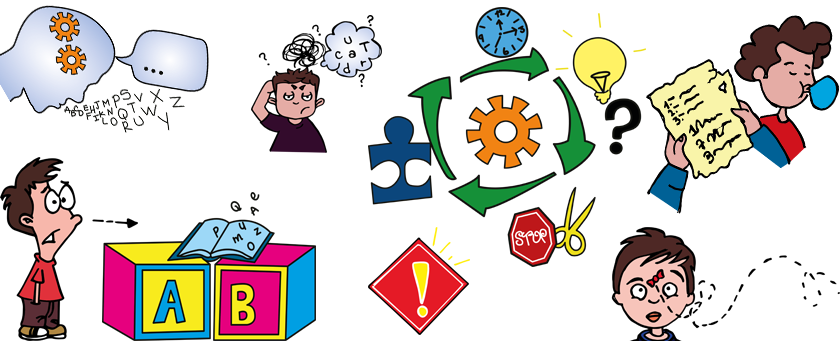
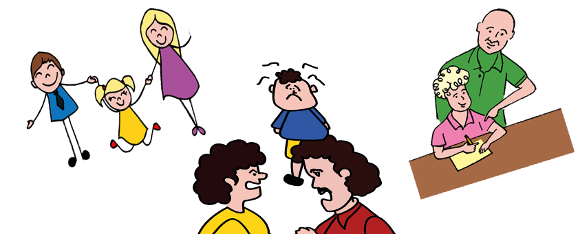

Segun el manual Diagnostico y Estadistico de los Procesos Mentales o mejor conocido como DSM-5 (2014) este trastorno se conoce por ser un patros persistente de inatencion y/o hiperactividad e impulsividad que interfiere en el funcionamiento o el desarrollo del ser (p.61).

Segun Craig, G.y Baucum, D.(2009) es aquella en la que el ser humano abarca de los 6 a 12 años, caracterizandose por ser un periodo interesante para aprender y afinar diversas habilidades, como la lectura, la escritura, practicar un deporte, etc. Cabe resaltar que el niño en este periodo empieza
a enfrentarse a evaluaciones propias o pruebas; de la misma forma, tambien a los obstaculos
además de los que la sociedad impone (p.274). Esta se ve afectada por el Tdah, ya que en este se ven distorsionadas aquellas habilidades que los niños tienden a poseer.

Aguado (2002) estos se conocen como aquellas habilidades mediante las cuales, los seres humanos a travez de la experiencia previa, procesan la informacion que el entorno suele presentar. Estos permiten resolver conflictos, tomar decisiones, comunicarnos, etc.

Los padres necesitan ser educados sobre la problemática de sus hijos, para esto son necesarios servicios de apoyo y atención no sólo destinados al niño, sino también a los padres y a la familia en general